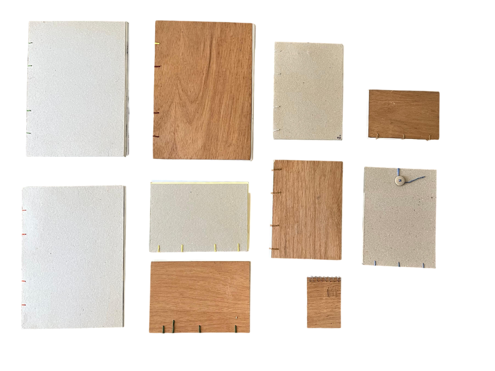
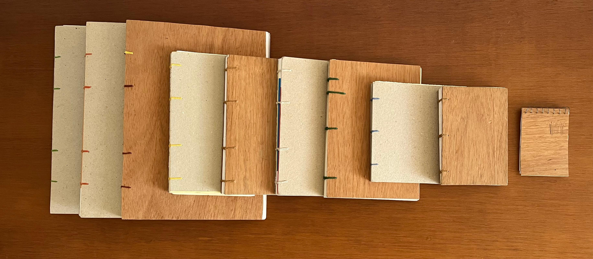
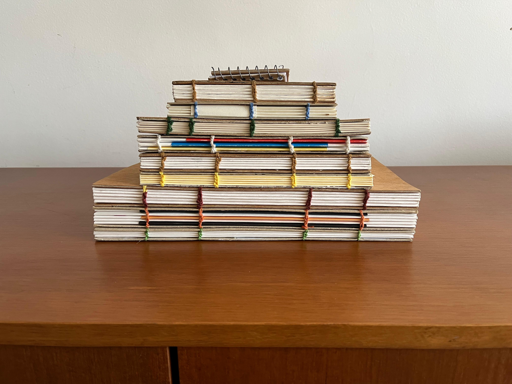

cadernos de madeira
2022 — atual
os cadernos de madeira são confeccionados e costurados à mão com capa de papel de alta gramatura revestida em folha de madeira natural. trata-se do resultado de uma prática de organização interna do ateliê, na qual a cor dos fios costurados à lombada indica a categoria de conteúdo ou eixo temático a ser encontrado no interior de cada caderno. são utiliizadas folhas de madeiras variadas como Tauarí, Freiijó e Angelim.
sob encomenda.



team
designers
Breno Samel @brenosamel
Teo Bressane-Sabadin @teobressanesabadin